경희대학교 2027 면접 가이드북
경희대학교 면접에서 실제로 나온 질문과, 내 생기부에서 질문을 뽑는 전환 규칙. 선배 후기 2017~2026 관측과 2027 공식 요강으로 재구성한 현학적 연구소 편집본.
경희대학교 2027 면접 가이드북은 전형별 면접 제원, 유형별 기출과 예상 질문, 답변 설계 순서를 담은 2027 대비 문서입니다. 33,000원, 보안 리더 열람.
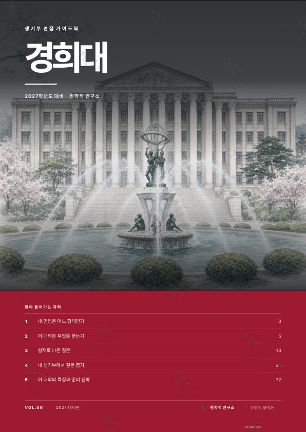
경희대학교 2027 면접 가이드북
33,000원부가세 포함, 보안 리더 열람 1개월- 실제 질문선배 후기 2017~2026 관측, 유형별 수록
- 전환 규칙내 생기부에서 질문 뽑기, 꼬리질문까지
- 전형 분석전형별 제원, 형태 판정표
- 형태PDF, 브라우저 보안 리더
- 인쇄계정당 3회, 원본 파일 비제공
결제 후 마이페이지에서 브라우저 보안 리더로 바로 열림. 열람 기간은 구매일부터 1개월. 아직 열지 않은 권은 공급받은 날부터 7일 이내 청약철회 가능. PDF 소장판은 워터마크 파일을 발급해 소장.
지면 미리보기
판매본 그대로의 지면. 본문은 흐림 처리, 구매 후 전체가 선명하게 열립니다.
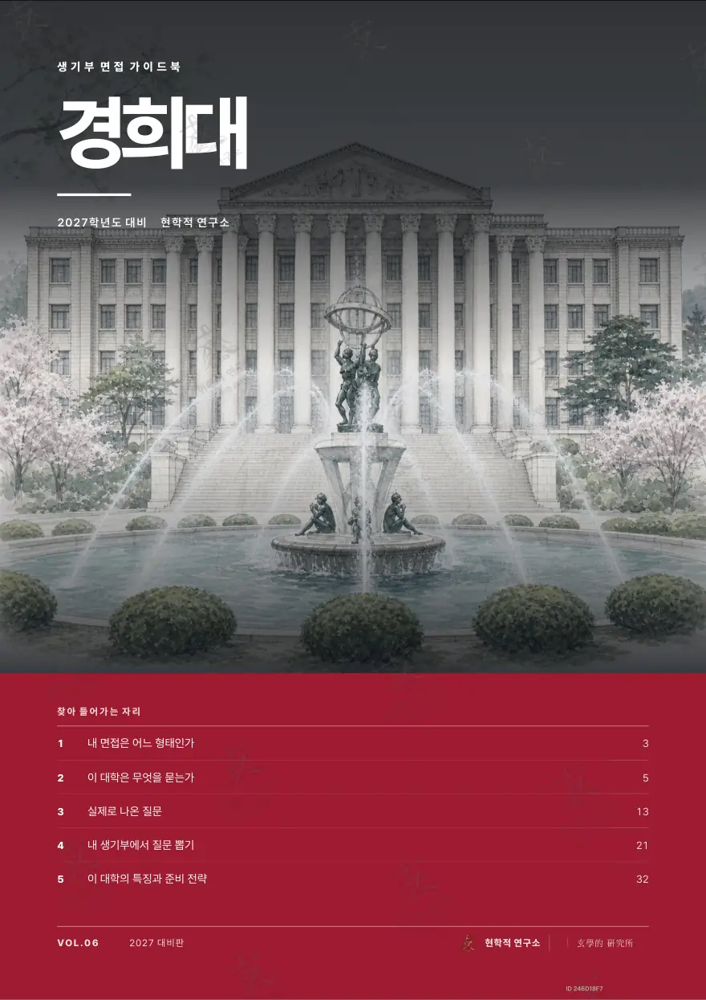
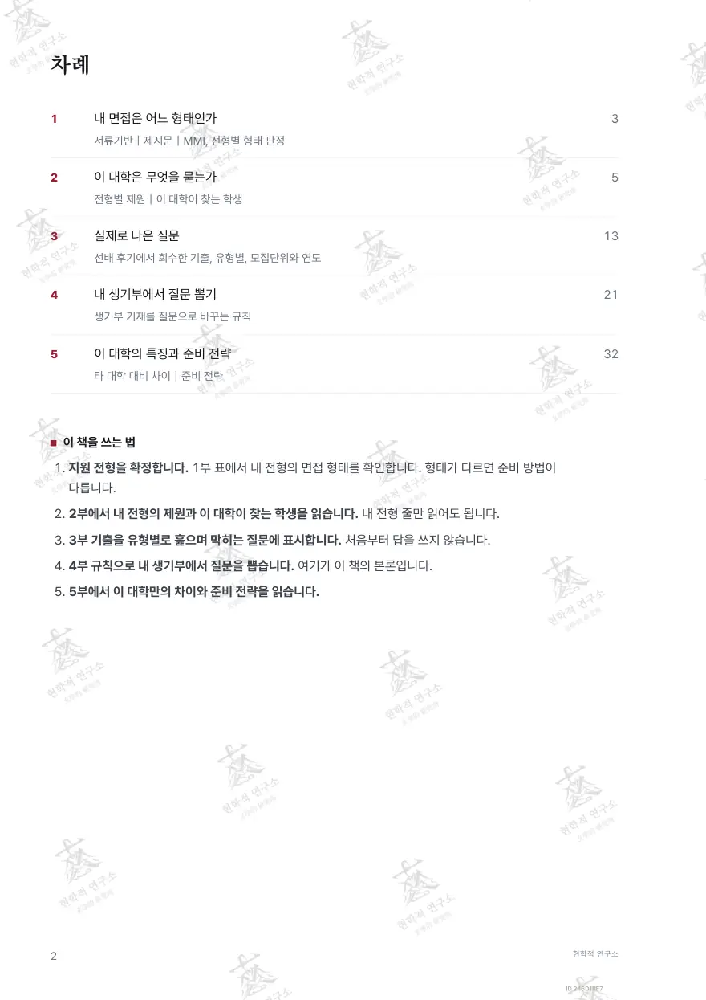
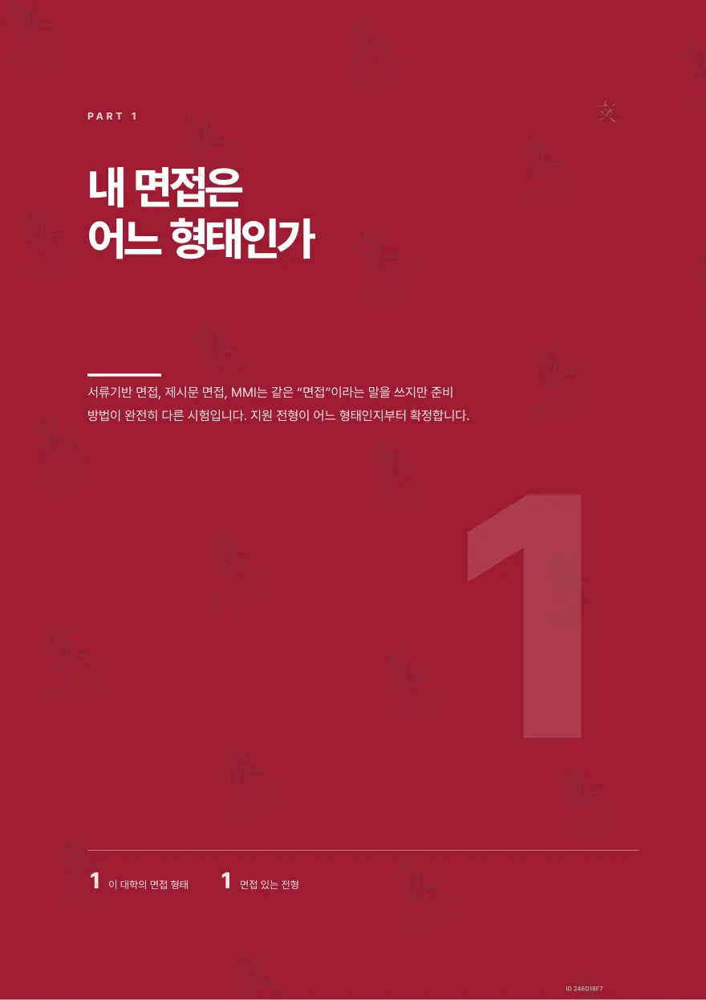
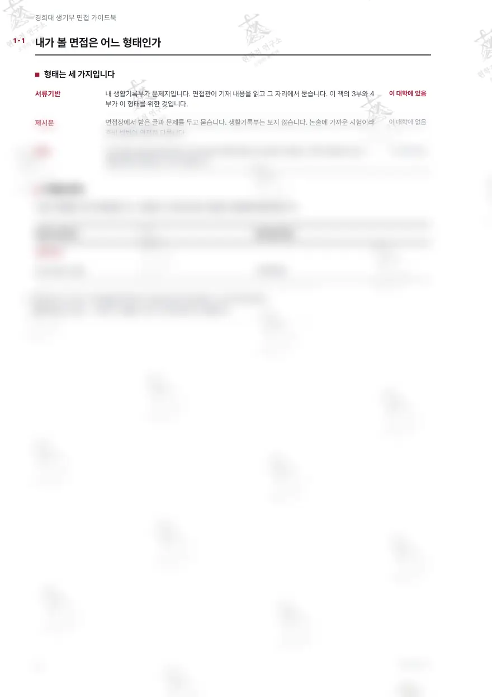
구매 후 선명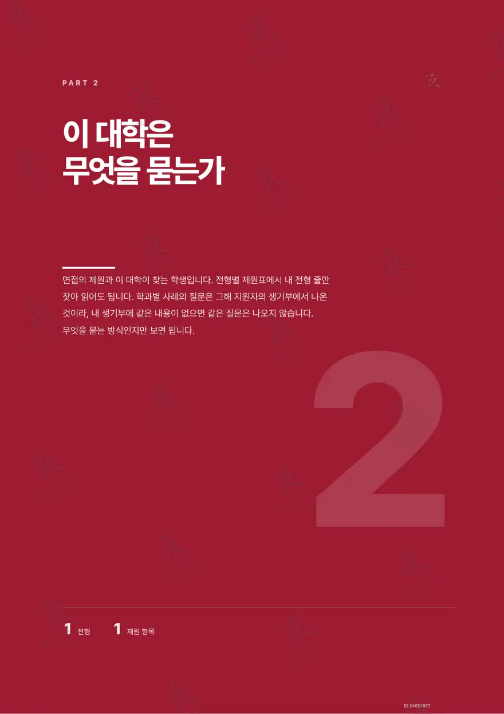
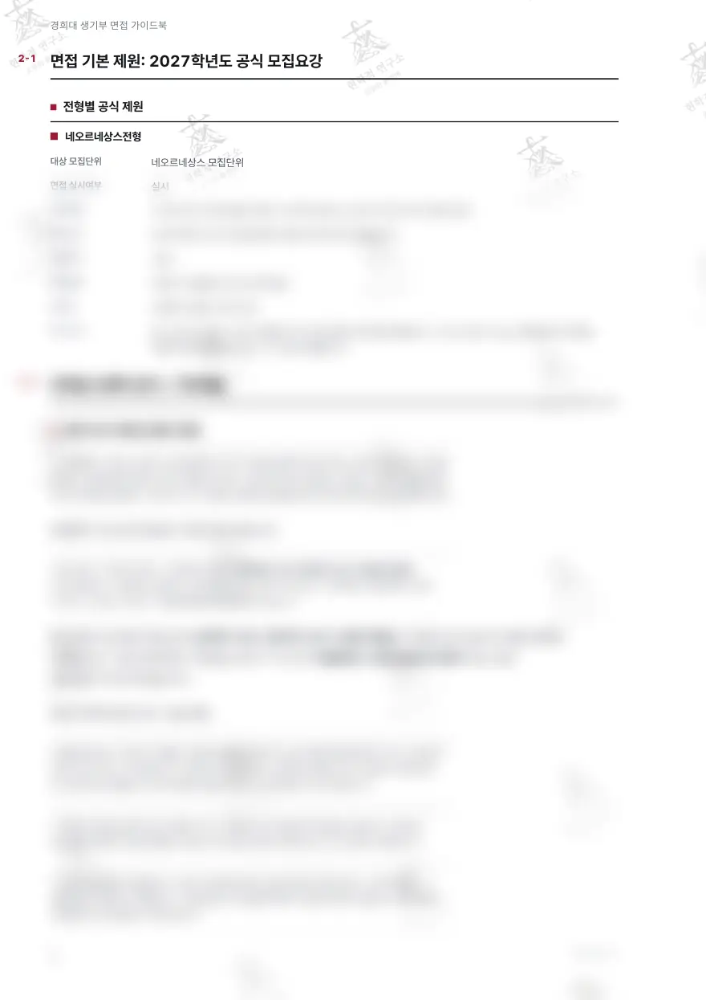
구매 후 선명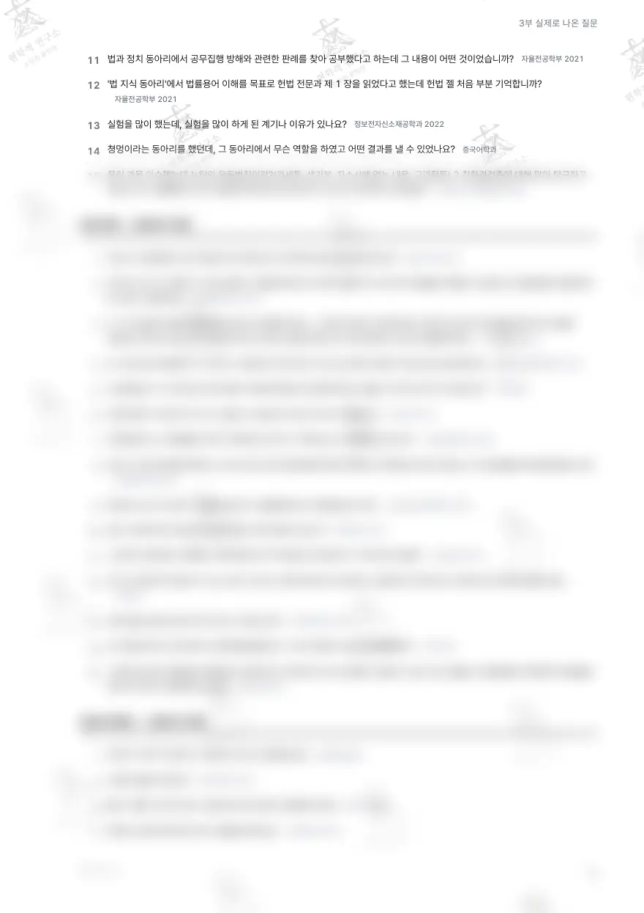
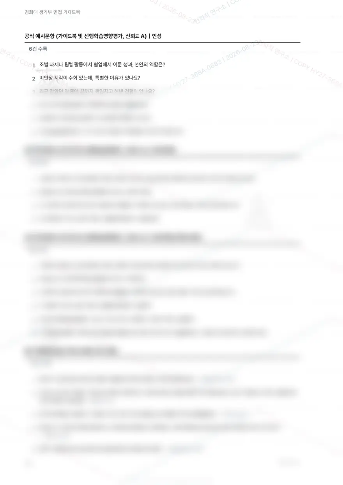
구매 후 선명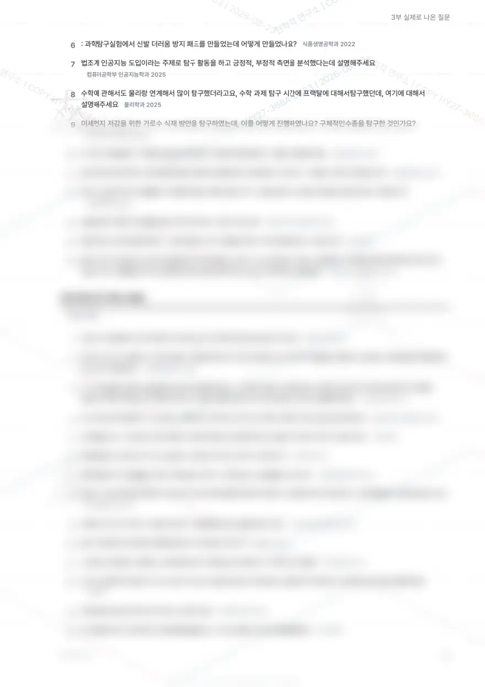
구매 후 선명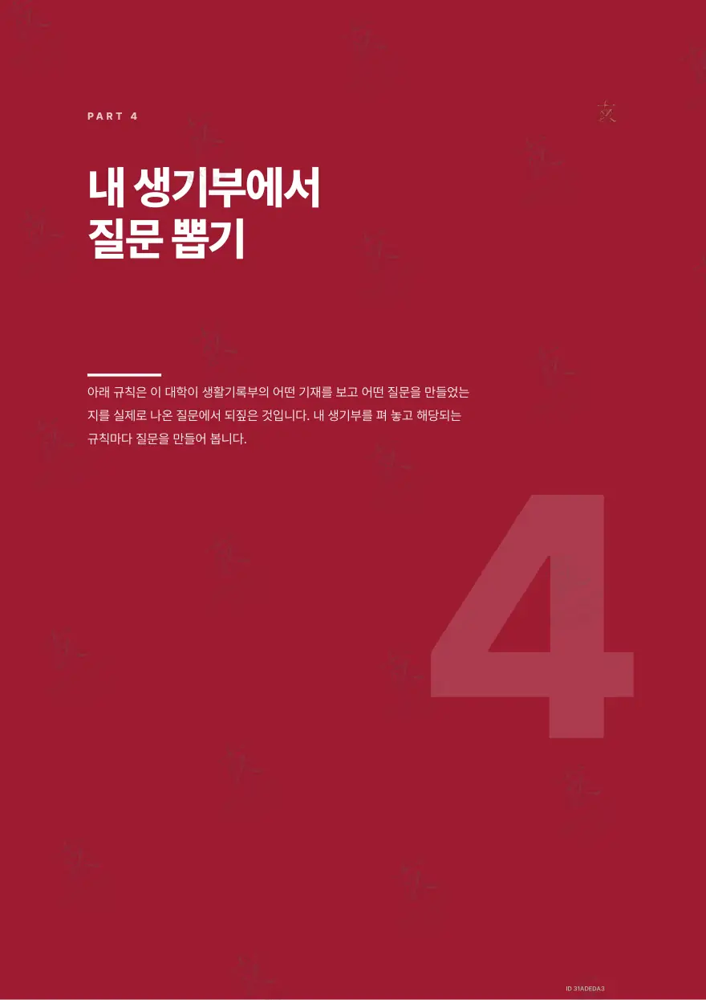
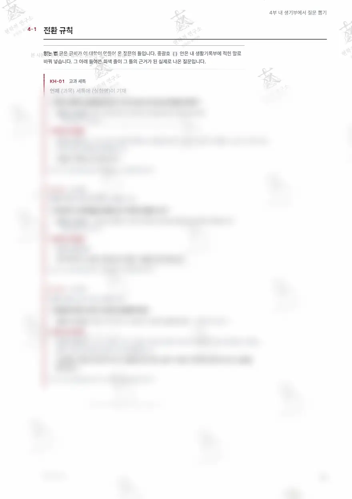
구매 후 선명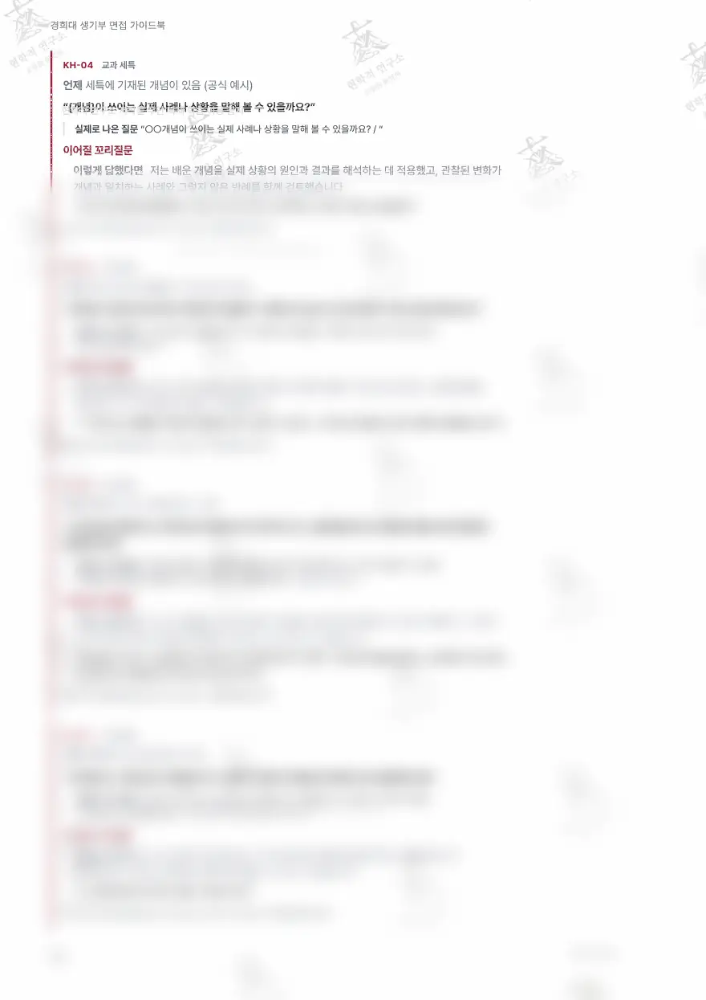
구매 후 선명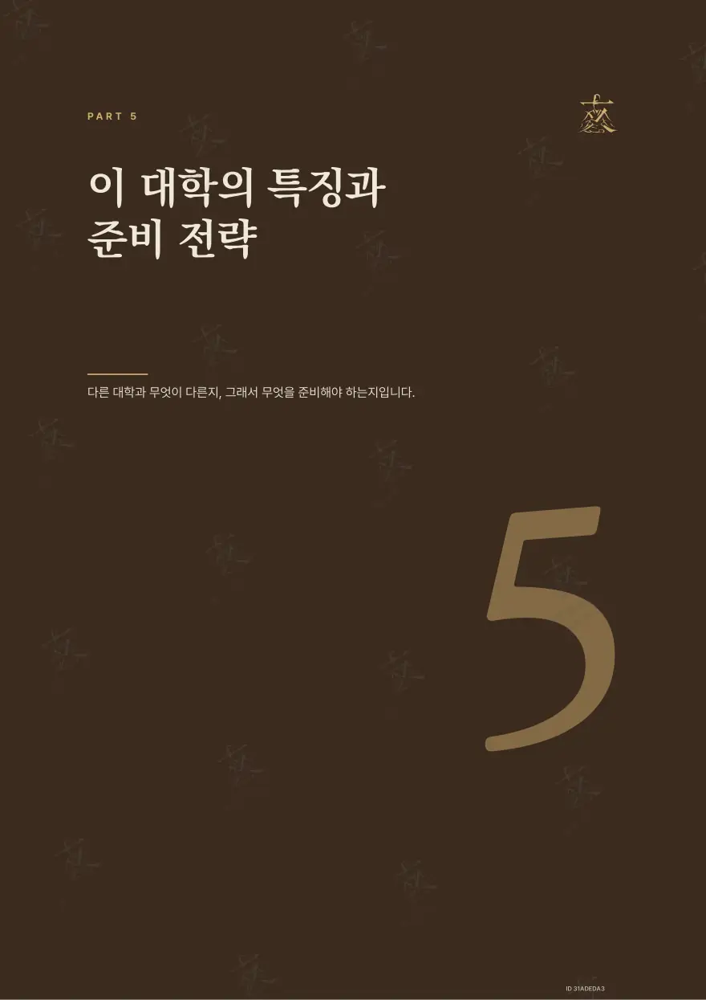
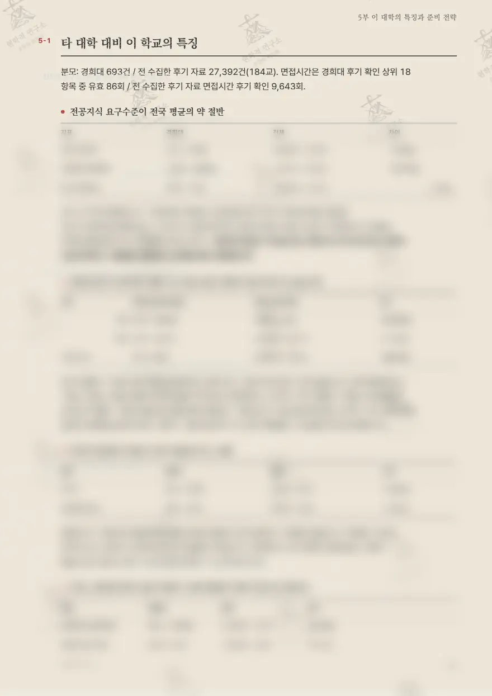
구매 후 선명각 지면 아래 숫자는 실제 면 번호입니다. 워터마크는 열람 계정마다 다르게 찍힙니다.
다섯 부로 끝나는 구성
표지의 차례 그대로입니다.
내 면접은 어느 형태인가
서류기반｜제시문｜MMI, 전형별 형태 판정
이 대학은 무엇을 묻는가
전형별 제원｜이 대학이 찾는 학생
실제로 나온 질문
선배 후기에서 회수한 실제 질문, 유형별, 모집단위와 연도
내 생기부에서 질문 뽑기
생기부에서 질문 뽑는 전환 규칙
이 대학의 특징과 준비 전략
타 대학 대비 차이｜준비 전략
이 대학의 면접, 판정부터
1부와 2부가 하는 일. 형태가 다르면 준비 방법이 다릅니다.
- 네오르네상스전형 (2027 현행)서류확인형
- 재외국민특별전형자료 없음. 자료에 문항 유형 미수록. 비대면 온라인 실시간이라는 형식 정보만 확보
- 실기우수자전형자료 없음. 자료에 면접 문항 미수록
질문 유형
실제로 나온 질문을 이 유형들로 나눠 싣습니다.
맛보기
유형별 첫 수록 질문.
- 공식 예시문항 (가이드북 및 선행학습영향평가, 신뢰도 A)｜인성
조별 과제나 팀별 활동에서 협업해서 이룬 성과, 본인의 역할은?
- 공식 예시문항 (가이드북 및 선행학습영향평가, 신뢰도 A)｜전공적합성
고등학교 재학 중 가장 흥미를 가졌던 과목이 있나요? 관심 분야와 관련해 주도적으로 이수한 과목이 있나요?
- 공식 예시문항 (가이드북 및 선행학습영향평가, 신뢰도 A)｜전공적합성 확장
고등학교 재학 중 가장 흥미를 가졌던 과목은? 관심 분야와 관련해 주도적으로 이수한 과목이 있는가?
- 탐구,세특심화
동아리 시간에 해당 학과와 관련된 내용을 탐구해본 경험이 있으면 말해주세요
전체 질문과 유형 해설은 책 본문에.
전환 규칙, 이 책의 본론
생기부의 기재 한 줄이 어느 질문으로 바뀌는지. 규칙마다 실제로 나온 질문과 꼬리질문이 붙습니다.
규칙의 질문 틀과 실제 질문, 꼬리질문은 본문에서. 위 미리보기 지면에 흐림 처리로 실려 있습니다.
5부 준비 전략
이 대학만의 차이에서 나온 전략. 제목만 싣습니다.
- 01생기부를 문장 단위로 쪼개고 각 문장에 질문 1개씩 붙입니다
- 02답변은 30초 단위로 잘라 연습합니다
- 03마무리 발언을 30초본과 20초본 2벌 준비합니다
- 04모든 주장에 반대 근거를 1개씩 붙여 둡니다
- 05인성 6문항을 사례 카드로 미리 채웁니다
- 06출결 기재 사유를 먼저 준비합니다
- 07진로 이력을 3년 타임라인으로 그려 전환점마다 이유를 적습니다
- 08성적 그래프의 변곡점과 최저 과목을 미리 설명합니다
전략의 제목 일부입니다. 본문과 근거는 책에서.
자주 묻는 질문
경희대학교 면접과 이 가이드북에 대해.
경희대학교 면접은 어떤 형태인가요?
경희대학교 2027 면접은 전형에 따라 서류기반, 확인 필요 형태로 나뉩니다. 전형별로 보면 네오르네상스전형 (2027 현행)은 서류확인형, 재외국민특별전형은 자료 없음. 자료에 문항 유형 미수록. 비대면 온라인 실시간이라는 형식 정보만 확보, 실기우수자전형은 자료 없음. 자료에 면접 문항 미수록입니다. 가이드북 1부에서 지원 전형의 면접 형태를 판정하고, 2부에서 전형별 제원을 읽습니다.
경희대학교 면접 기출 질문은 몇 건이며 어떻게 정리했나요?
선배 후기 2017~2026년 관측에서 회수한 기출 172건을 57개 모집단위, 17개 질문 유형으로 나눠 실었습니다. 4부에는 생기부 기재를 질문으로 바꾸는 전환 규칙 52개가 실제 질문, 꼬리질문과 함께 실려 있습니다.
경희대학교 가이드북은 어떻게 열람하고 가격은 얼마인가요?
경희대학교 2027 면접 가이드북은 45면이며 결제 후 마이페이지의 보안 리더로 바로 열람합니다. 열람 기간은 구매일부터 1개월, 인쇄는 권당 3회이고 원본 파일은 제공하지 않습니다. 가격은 보안 리더 열람판 33,000원, PDF 소장판 110,000원입니다. 열람을 시작하기 전에는 취소할 수 있습니다.
이 학교부터 담기
경희대학교 2027 면접 가이드북, 33,000원. 보안 리더 열람 1개월.